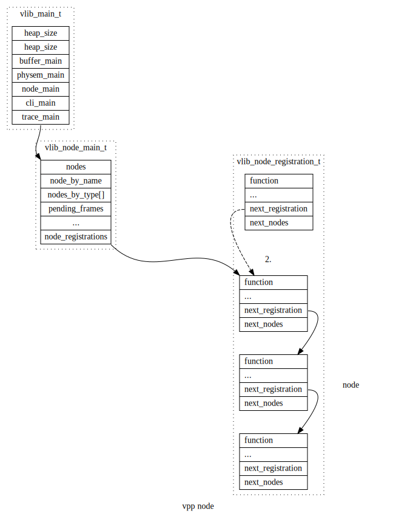

向量包处理库（Vector Processing Packet）
Table of Contents
1. NODE
1.1. node 的类型
typedef enum { /* An internal node on the call graph (could be output). */ VLIB_NODE_TYPE_INTERNAL, /* Nodes which input data into the processing graph. Input nodes are called for each iteration of main loop. */ VLIB_NODE_TYPE_INPUT, /* Nodes to be called before all input nodes. Used, for example, to clean out driver TX rings before processing input. */ VLIB_NODE_TYPE_PRE_INPUT, /* "Process" nodes which can be suspended and later resumed. */ VLIB_NODE_TYPE_PROCESS, VLIB_N_NODE_TYPE, } vlib_node_type_t;
1.2. node的定义
1.2.1. VLIB_REGISTER_NODE
node 的注册，使用gcc的 __attribute__((__constructor__)) 构造属性，在main函数之前进行注册。
#define VLIB_REGISTER_NODE(x, ...) \ __VA_ARGS__ vlib_node_registration_t x; \ static void __vlib_add_node_registration_##x(void) \ __attribute__((__constructor__)); \ static void __vlib_add_node_registration_##x(void) \ { \ vlib_main_t *vm = vlib_get_main(); \ x.next_registration = vm->node_main.node_registrations; \ vm->node_main.node_registrations = &x; \ } \ static void __vlib_rm_node_registration_##x(void) \ __attribute__((__destructor__)); \ static void __vlib_rm_node_registration_##x(void) \ { \ vlib_main_t *vm = vlib_get_main(); \ VLIB_REMOVE_FROM_LINKED_LIST(vm->node_main.node_registrations, \ &x, next_registration); \ } \ __VA_ARGS__ vlib_node_registration_t x VLIB_REGISTER_NODE(dpdk_input_node) = { .type = VLIB_NODE_TYPE_INPUT, .name = "dpdk-input", .sibling_of = "device-input", .flags = VLIB_NODE_FLAG_TRACE_SUPPORTED, /* Will be enabled if/when hardware is detected. */ .state = VLIB_NODE_STATE_DISABLED, .format_buffer = format_ethernet_header_with_length, .format_trace = format_dpdk_rx_trace, .n_errors = DPDK_N_ERROR, .error_strings = dpdk_error_strings, } /* 宏定义展开后 (dpdk-input-node) */ /* dpdk_input_node 变量声明 */ vlib_node_registration_t dpdk_input_node; /* 函数声明：注册dpdk_input_node， 利用gcc的构造属性，使其先于main函数执行 */ static void __vlib_add_node_registration_dpdk_input_node(void) __attribute__((__constructor__)); /* 函数定义 */ static void __vlib_add_node_registration_dpdk_input_node(void) { vlib_main_t *vm = vlib_get_main(); /* 利用 node 结构的 next_registration 将所有node串成一个链表 */ dpdk_input_node.next_registration = vm->node_main.node_registrations; vm->node_main.node_registrations = &dpdk_input_node; } /* 函数声明： 从vlib_main_t 结构的链表中移除该node， 在main函数运行后调用(析构函数) */ static void __vlib_rm_node_registration_dpdk_input_node(void) __attribute__((__destructor__)); /* 函数定义 */ static void __vlib_rm_node_registration_dpdk_input_node(void) { vlib_main_t *vm = vlib_get_main(); VLIB_REMOVE_FROM_LINKED_LIST(vm->node_main.node_registrations, &dpdk_input_node, next_registration); } /* node的定义 */ vlib_node_registration_t dpdk_input_node = { .type = VLIB_NODE_TYPE_INPUT, .name = "dpdk-input", .sibling_of = "device-input", .flags = VLIB_NODE_FLAG_TRACE_SUPPORTED, /* Will be enabled if/when hardware is detected. */ .state = VLIB_NODE_STATE_DISABLED, .format_buffer = format_ethernet_header_with_length, .format_trace = format_dpdk_rx_trace, .n_errors = DPDK_N_ERROR, .error_strings = dpdk_error_strings, }
- 利用 VLIB_REGISTER_NODE(x,…) 定义好node后，会生成 static void \__vlib_add_node_registration_nodename(void){…} 之类的初始化函数，此类函数使用 __attribute__ ((constructor)) 属性修饰(构造函数)， 会在main函数执行之前被调用。
- 函数的功能是利用自身的 next_registration 成员以及 vlib_mains[n]->node_main.node_registrations 将所有node串成一个链表。

1.2.2. VLIB_NODE_FN
VLIB_NODE_FN用于定义 vlib_node_registration_t 结构中的 function（node的处理函数） 成员。
注意：如果使用VLIB_NODE_FN定义node的function时， 定义node时的function成员必须为NULL。
#define VLIB_NODE_FN(node) \ uword CLIB_MARCH_SFX(node##_fn)(); \ static vlib_node_fn_registration_t CLIB_MARCH_SFX( \ node##_fn_registration) = { \ .function = &CLIB_MARCH_SFX(node##_fn), \ }; \ \ static void __clib_constructor CLIB_MARCH_SFX( \ node##_multiarch_register)(void) \ { \ extern vlib_node_registration_t node; \ vlib_node_fn_registration_t *r; \ r = &CLIB_MARCH_SFX(node##_fn_registration); \ r->priority = CLIB_MARCH_FN_PRIORITY(); \ r->name = CLIB_MARCH_VARIANT_STR; \ r->next_registration = node.node_fn_registrations; \ node.node_fn_registrations = r; \ } \ uword CLIB_CPU_OPTIMIZED CLIB_MARCH_SFX(node##_fn) VLIB_NODE_FN(dpdk_input_node) (vlib_main_t *vm, vlib_node_runtime_t *node, vlib_frame_t *f) {......} /* 宏定义展开 */ uword dpdk_input_node_fn(); static vlib_node_fn_registration_t dpdk_input_node_fn_registration = { .function = &dpdk_input_node_fn, }; static void __clib_constructor dpdk_input_node_multiarch_register(void) { /* 在使用VLIB_NODE_FN注册function时， node中的function成员必须为NULL, 在调用register_node时, 先检查是否初始化了node中的node_fn_registrations 成员(使用VLIB_NODE_FN宏定义注册) */ extern vlib_node_registration_t node; vlib_node_fn_registration_t *r; r = &dpdk_input_node_fn_registration; r->priority = 0; r->name = "default"; r->next_registration = node.node_fn_registrations; node.node_fn_registrations = r; } uword dpdk_input_node_fn(vlib_main_t *vm, vlib_node_runtime_t *node, vlib_frame_t *f) {......}
1.3. node的注册
使用函数 register_node() 函数对node进行注册.
函数 register_node() 的调用顺序：


vlib数据包处理应用程序总是定义一组图节点来处理数据包。
一个通常通过VLIB_REGISTER_NODE宏来构造vlib_node_registration_t。在运行时，框架将此类注册集处理为有向图。在运行时将节点添加到图很容易。该框架不支持删除节点。
vlib提供了几种类型的矢量处理图节点，主要用于控制框架的调度行为。
- vlib_node_registration_t的类型成员的功能如下:
- VLIB_NODE_TYPE_PRE_INPUT-在所有其他节点类型之前运行
- VLIB_NODE_TYPE_INPUT-在pre_input节点之后尽可能频繁地运行
- VLIB_NODE_TYPE_INTERNAL-仅在通过添加待处理帧后显示的使其可运行
- VLIB_NODE_TYPE_PROCESS-仅在明确使其可运行时。“进程”节点实际上是协作的多任务线程。他们 必须在相当短的时间内明确暂停。
为了更好地理解图节点调度程序，请阅读./src/vlib/main.c:vlib_main_loop。
2. node初始化
vlib_node_main_init
- sibling关联
1. 获取sibling_of标识的node,
2. 将本node index保存至同级node(属于同一个sibling_of)的sibling_bitmap中
3. 将同级node的index保存至本node的sibling_bitmap中
4. 将本node 和 所属 sibling_of的node互相关联
- node和next_node的关联
1. 将next_node_names 名称解析为索引, 保存至 vlib_node_t 中的 next_nodes成员中
- next_node和上一级的关联
1. 将node的索引保存至next_node的prev_node_bitmap中
3. MAIN_LOOP注册
VLIB_MAIN_LOOP_ENTER_FUNCTION(start_workers);
VLIB_MAIN_LOOP_ENTER_FUNCTION(ip4_main_loop_enter);
VLIB_MAIN_LOOP_ENTER_FUNCTION(ip6_main_loop_enter);
VLIB_MAIN_LOOP_ENTER_FUNCTION(session_main_loop_init);
vlib_node_registration_t node;
利用 node->node_fn_registrations; 来串接node的注册;
4. INIT_FUNCTION注册
VLIB_INIT_FUNCTION
5. PLUGIN注册
typedef CLIB_PACKED(struct { u8 default_disabled; const char version[32]; const char version_required[32]; const char overrides[256]; const char *early_init; const char *description; }) vlib_plugin_registration_t; #define VLIB_PLUGIN_REGISTER() \ vlib_plugin_registration_t vlib_plugin_registration \ CLIB_NOSANITIZE_PLUGIN_REG_SECTION \ __clib_export __clib_section(".vlib_plugin_registration")
6. THREAD注册
#define VLIB_REGISTER_THREAD(x,...) \ __VA_ARGS__ vlib_thread_registration_t x; \ static void __vlib_add_thread_registration_##x (void) \ __attribute__((__constructor__)) ; \ static void __vlib_add_thread_registration_##x (void) \ { \ vlib_thread_main_t * tm = &vlib_thread_main; \ x.next = tm->next; \ tm->next = &x; \ } \ static void __vlib_rm_thread_registration_##x (void) \ __attribute__((__destructor__)) ; \ static void __vlib_rm_thread_registration_##x (void) \ { \ vlib_thread_main_t * tm = &vlib_thread_main; \ VLIB_REMOVE_FROM_LINKED_LIST (tm->next, &x, next); \ } \ __VA_ARGS__ vlib_thread_registration_t x VLIB_REGISTER_THREAD (worker_thread_reg, static) = { .name = "workers", .short_name = "wk", .function = vlib_worker_thread_fn, }; /* 宏定义展开 */ vlib_thread_registration_t worker_thread_reg; static void __vlib_add_thread_registration_worker_thread_reg (void) __attribute__((__constructor__)); static void __vlib_add_thread_registration_worker_thread_reg (void) { vlib_thread_main_t *tm = &vlib_thread_main; worker_thread_reg.next = tm->next; tm->next = &worker_thread_reg; } static void __vlib_rm_thread_registration_worker_thread_reg (void) __attribute__((__constructor__)); static void __vlib_rm_thread_registration_worker_thread_reg (void) { vlib_thread_main_t *tm = &vlib_thread_main; VLIB_REMOVE_FROM_LINKED_LIST (tm->next, &worker_thread_reg, next); } vlib_thread_registration_t worker_thread_reg;
7. SIBILIND
- device-input
- ethernet-input
- nat-default
- ip6-rewrite
- ip4-rewrite
- ip4-input
- ip6-input
- ip6-local
- ip4-local
- ip4-drop
- ip6-drop
- l2-output-feat-arc
- l2-input-feat-arc
- mpls-lookup
- ip4-lookup
- ip6-lookup
- mpls-load-balance
- adj-midchain-tx
- mpls-output
- esp6-decrypt-tun
- esp4-decrypt-tun
- esp6-decrypt
- esp4-decrypt